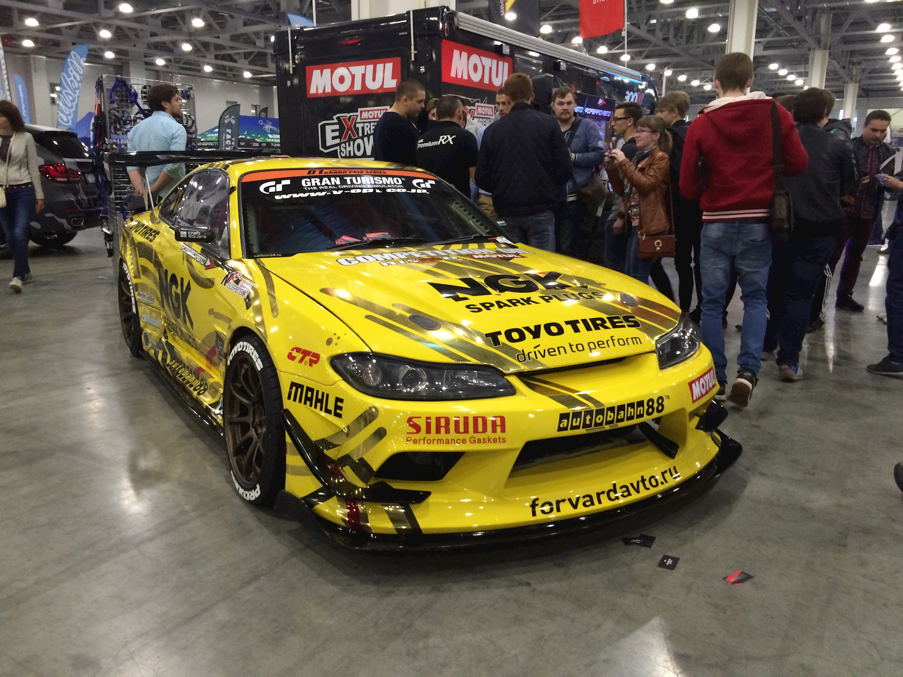
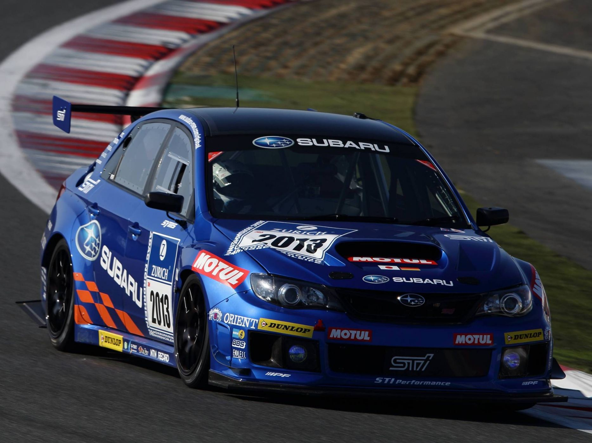
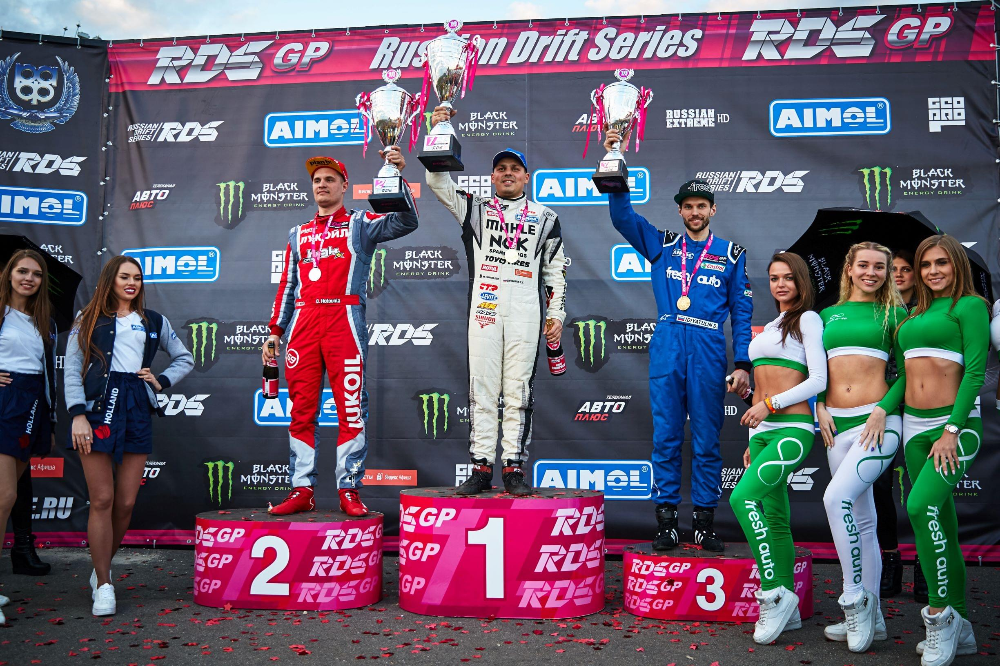

Автомобилями и гонками начал увлекаться с детства, большое влияние на это оказал старший брат Владимир, так как он увлекался спортивным автомобилями и продажей автозапчастей. Его отец торговал автомобильными запчастями и Георгий всё время крутился рядом, помогал как с продажей, так и с ремонтом.
Изначальный вид автомобиля Гочи
Гонки начинались с уличных, с дрэга, и просто быстрых покатушек на автомобиле Honda Integra и Toyota Altezza брата, либо на своём Toyota Levin. По словам Георгия, дрифту он обучился ещё в 16 лет, катаясь ночами по заснеженным дорогам на машине брата. Так или иначе, в 2004-м году развитие увлечения автомобилями вылилось в приобретении Nissan Silvia S15 жёлтого цвета с японского аукциона. Машина была оснащена блокировкой дифференциала и стойками HKS, кузов — обвесом. По словам Георгия — это первая Silvia в Красноярске, она была пригнана из Японии и изначально использовалась как городской автомобиль, но ездить на почти заводской версии стало скучно и доработки не заставили себя ждать.
В начале 2000х годов Георгий познакомился с Аркадием Цареградцевым. Это знакомство стало судьбоносным для красноярского дрифта.
По началу для Георгия это было хобби: ночью он выбирал себе площадку, где мог дрифтовать. После чего Чивчян решил заняться организацией соревнований по дрифту, чтобы привлечь к этому спорту больше людей. Вместе с Аркадием Цареградцевым — директором гоночной трассы «Красное кольцо», они начали проводить соревнования. Изначально Георгий был судьёй соревнований, так как в Красноярске на тот момент ему никто не мог составить конкуренции, уже после того, как уровень дрифта у красноярских пилотов значительно вырос, он стал принимать участие как спортсмен.
Также в начале карьеры Георгий увлекался кольцевыми автогонками, он неоднократный призёр и победитель гонок серии «TIME ATTACK», поначалу его автомобилем в гонках была всё та же Nissan Silvia, позже уже для этих целей использовалась Subaru Impreza WRX STI. После 2013 года Георгий понял, что нужно сосредоточиться на дрифте и оставил кольцевые гонки.
Изначально отношение родственников к увлечению дрифтом было не совсем однозначное — они сомневались нужно-ли ему это, но потом смирились и поняли, что его уже не оторвать
С 2008 года, когда уровень Красноярских дрифтеров вырос, соревнования по дрифту в Красноярске обрели новый облик и стали проводиться на новой гоночной трассе «Красное кольцо».
С самых первых этапов и до сих пор, в любых соревнованиях Георгий считается одним из главных фаворитов. С тех пор «Гоча» считается сильнейшим дрифтером в России, что он в течение всей карьеры доказывает не только в Сибири, но и в западной части России.
В 2013 году состоялась первая поездка на запад России для участия в соревновании RDS Запад, но Георгию удалось принять участие только в 2х этапах, к сожалению из-за немного разных стилей ему не удалось занять призовых мест, также усложнило адаптацию то, что он приезжал один из своего региона, уже после начали подтягиваться остальные — Аркадий Цареградцев, Дмитрий Ермохин, Евгений Лосев, Дамир Идиятулин. Но уже с 2015 года Гоча начал показывать всем, что является сильнейшим дрифтером в России и чем больше ездил, тем выше становилось его место в общем рейтинге. Так в 2017 году впервые приняв участие наравне с западными пилотами во всех этапах серии, он победил с огромным отрывом. В 2018 году Георгий успешно защитил звание чемпиона несмотря на появление в чемпионате как приглашаемых на этапы иностранных пилотов и постоянно участвующего в чемпионате всемирно известного пилота Дайго Сайто. Свое мастерство Чивчян подтвердил и в 2019, став единственным 3-х кратным чемпионом РДС.
Вернуться на главную страницу